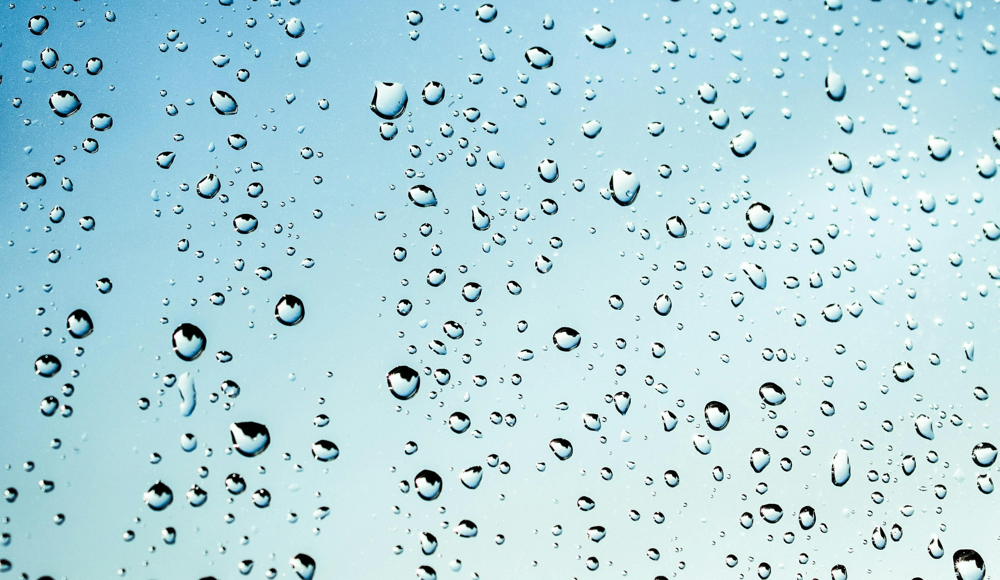
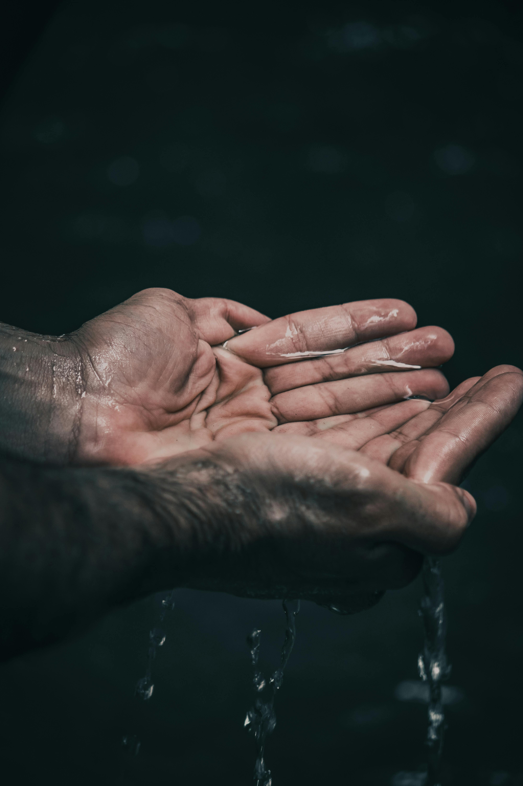

Agua para el futuro.
El agua no es obligación de un gobierno conservarla, es obligación de todos los ciudadanos protegerla, conservarla, y cuidarla..

Recuerda que...
El derecho que tenemos todas las especies es el agua, es un mandato conservarla para un mejor futuro.

La importancia de la captacion.
La captación del agua para una mejor conservación es un principio que debemos cumplir y una iniciativa que debemos ejercer.